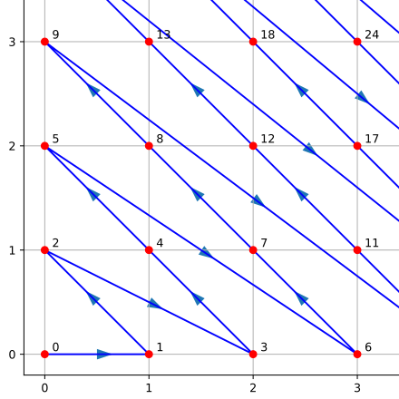

TP4 : Récursivité
Contents
TP4 : Récursivité#
Note
Les objectifs du TP :
Écrire des algorithmes récursifs
Mettre en oeuvre la mémoïsation
Note
- Si l’on souhaite écrire une fonction qui calcule \(n!\) , au lieu de calculer tous les produits on peut écrire, pour \(n>1\), que \(n!=n\times (n-1)!\) et \(1!=1\). Autrement dit, si \(f\) est cette fonction alors elle vérifie :
\(f(n)=n\times f(n-1)\) si \(n>1\) et \(f(1)=1\) .
On pourrait donc l’écrire :
def factorielle(n): if n == 1: return 1 else: return n*factorielle(n-1)
Calculer de cette manière s’appelle la récursivité, la fonction s’appelle elle-même.
Une fonction récursive commence toujours par traiter ce qu’on appelle les conditions d’ârret, dans notre exemple il n’y en a qu’une, mais il peut y en avoir plusieurs.
En utilisant le décorateur suivant, vous pourrez observer les appels successifs d’une fonction récursive :
def trace(func): def wrapper(*args): print(' ' * wrapper.space, end='') print('{} <− {}'.format(func.__name__, str(args))) wrapper.space += 1 val = func(*args) wrapper.space -= 1 print(' ' * wrapper.space, end='') print('{} −> {}'.format(func.__name__, str(val))) return val wrapper.space = 0 return wrapper
Prenons un exemple. Considérons la fonction suivante :
Que calcule cette fonction ? Avec le décorateur on obtient :
>>> s(4,3)
s <− (4, 3)
s <− (3, 4)
s <− (2, 5)
s <− (1, 6)
s <− (0, 7)
s −> 7
s −> 7
s −> 7
s −> 7
s −> 7
Vous pouvez voir que la fonction a été appelée cinq fois, avant de retourner cinq fois… On dit qu’on a empilé les appels. Le nombres d’appels peut-être très important, ce qui est un problème. C’est ce qui nous intéressera à la fin du TP.
Ceux qu’il faut avoir programmés une fois#
Exercice :
Écrire une fonction
exp1(a,n)qui prend comme arguments un nombre flottantaet un entiernet qui retourne \(a^n\), en utilisant l’opérateur puissance de Python.Écrire une deuxième fonction récursive
exp2(a,n), qui retourne encore \(a^n\), et qui exploite la relation \(a^n = a\times a^{n-1}\).Écrire une troisième fonction
exp3(a,n), qui retourne toujours \(a^n\), en exploitant la relation :\[a^n = a^{\lfloor n/2\rfloor}\times a^{n-\lfloor n/2\rfloor}\]Écrire une quatrième fonction
exp4(a,n),qui retourne toujours \(a^n\) , en exploitant la même relation, mais en exploitant en plus que :\[\begin{split}n-\lfloor n/2\rfloor = \left\{\begin{array}{lr} \lfloor n/2\rfloor&\text{ si $n$ est pair.}\\ \lfloor n/2\rfloor + 1&\text{ sinon.}\end{array}\right.\end{split}\]Modifier vos codes pour compter le nombre d’appels récursifs des fonctions.
Utiliser la fonction
perf_counter()du moduletimepour mesurer le temps d’exécution de ces quatre fonctions par calculer \(2^{900}\). Qu’observez-vous ?Comparer le nombre d’appels récursifs des trois fonctions
exp2(a,n),exp3(a,n)etexp4(a,n), pour \(a=2\) et \(n=100,\,200,\,400,\,800\).Évaluez le nombre de multiplication effectuées par
exp3(a,n)etexp4(a,n).
Solution
def exp1(a,n): return a**n def exp2(a,n): if n == 0: rep = 1 else: rep = a*exp2(a,n-1) return rep def exp3(a,n): if n == 0: rep = 1 elif n == 1: rep = a else: p = n // 2 rep = exp3(a,p)*exp3(a,n-p) return rep def exp4(a,n): if n == 0: rep = 1 elif n == 1: rep = a elif n % 2 == 0: rep = exp4(a*a, n//2) else: rep = a*exp4(a*a, n//2) return rep
Exercice : Écrire une fonction récursive sum_digits(n) qui prend comme argument un entier \(n\) et qui retourne la somme de ses chiffres.
Solution
def sum_digits(n): if n < 10: rep = n else: rep = (n%10)+ sum_digits(n//10) return rep
Exercice : Soient \(a\) et \(b\) deux flottants, on définit les suites \((u_n)\) par \(u_0= a\) et \(v_0=b\) et pour \(n\geq 0\) :
\[u_{n+1} = \sqrt{u_n v_n} \text{ et }v_{n+1}=\dfrac{1}{2}\left(u_n+v_n\right).\]Écrire deux fonctions récursives
seq_u(n,a,b)etseq_v(n,a,b)qui retourne respectivement les valeurs de \(u_n\) et \(v_n\).
Exercice : Pour dénombrer \(\mathbb{N}\times\mathbb{N}\), on peut utiliser la fonction de Cantor pour numéroter les éléments de \(\mathbb{N}\times\mathbb{N}\) de la manière illustrée sur la figure suivante :
Écrire une fonction récursive
pairing_function(x,y)qui prend comme argument un élément \((x,y)\in \mathbb{N}\times\mathbb{N}\) et qui retourne son numéro.
{kind=link}
Solution
def pairing_function(x,y): if x == 0 and y == 0: return 0 if y > 0: return 1 + pairing_function(x+1, y-1) return 1 + pairing_function(0, x-1)
Écrire, de manière récursive, la fonction réciproque inv_pairing_function(n) qui prend comme argument un entier \(n\) et qui retourne le couple \((x,y)\) dont il est le numéro.
Solution
def inv_pairing_function(n): if n == 0: return (0,0) (x,y) = inv_pairing_function(n-1) if x > 0: return (x-1,y+1) return (y+1,0)
Exercice *Difficile* : Dans cet exercice on représente les ensembles d’entiers par des listes d’entiers deux à deux distincts. Écrire une fonction récursive list_of_subset(E) qui prend comme argument un ensemble et qui retourne l’ensemble de ses sous-ensembles. On pourra remarquer que si \(E\) est un ensemble et si \(a\in E\), alors les sous-ensembles de \(E\) sont ceux de \(E\setminus\{a\}\), et ceux de \(E\setminus\{a\}\) auxquels on ajoute \(a\).
Solution
def subset(E): if E == []: rep = [[]] else: E1 = subset(E[1:]) E2 = [[E[0]] + s for s in E1] rep = E1 + E2 return rep
De beaux dessins#
Note
Voici le code d’une fonction qui permet de tracer un cercle de centre \((x,y)\) et de rayon \(r>0\) :
import matplotlib.pyplot as plt
fig, ax = plt.subplots()
ax.set_aspect(1)
plt.axis("equal")
def circle(x,y,r):
ax.add_artist(plt.Circle((x,y),r,color ='r', fill = False))
Et voici celui d’une fonction qui trace un triangle plein dont les sommets sont \((x_1,y_1)\), \((x_2,y_2)\) et \((x_3,y_3)\) :
from matplotlib.patches import Polygon
def triangle([[x1,y1],[x2,y2],[x3,y3]]):
liste = [[x1,y1],[x2,y2],[x3,y3]]
ax.add_patch(Polygon(liste, closed=True,fill=True, color='red'))
Exercice : Écrire une fonction récursive bubble1(n) qui prend comme argument un entier \(n\), et qui permet d’obtenir la figure suivante pour \(n=5\) :
{kind=link}
Exercice : Écrire une fonction récursive bubble2(n) qui prend comme argument un entier \(n\), et qui permet d’obtenir la figure suivante pour \(n=5\) :
{kind=link}
Exercice : Écrire une fonction récursive sierpinski(n) qui prend comme argument un entier \(n\), et qui permet d’obtenir les figures suivantes pour \(n=1,2,3\) et \(4\) :
{kind=link}
{kind=link}
{kind=link}
{kind=link}
Mémoïsation#
Note
Nous pouvons diminuer les coûts temporels et spatiaux d’une fonction aux appels récursifs multiples en enregistrant les calculs déjà effectués dans une mémoire cache. Nous allons appliquer ce principe au calcul récursif du \(n\)-ième terme de la suite de Fibonacci.
Exercice : Écrire une fonction itérative fibo_it(n) qui prend comme argument un entier \(n\) et qui retourne le \(n\)-ième terme de la suite de Fibonacci.
Exercice : Écrire une fonction récursive fibo_rec(n) qui prend comme argument un entier \(n\) et qui retourne le \(n\)-ième terme de la suite de Fibonacci.
Exercice : Écrire une fonction récursive fibo_m(n) qui tire profit de la mémoïsation. Pour cela vous allez utiliser une liste comme cache pour stocker les résultats des calculs intermédiaires. Au départ vous initialiserez le cache avec les deux premiers termes de la suite : cache = [0,1]. Ensuite avant de faire un appel récursif vous vérifierez si le terme que vous souhaitez calculer n’est pas déjà en cache.
Solution
cache=[1,1] def fib_m(n): if n < len(cache): #Si n est dans le cache, on a déjà calculé la valeur donc on la renvoie directement return cache[n] else : rep = fib_m(n-1) + fib_m(n-2) # Je le sauvegarde pour ne pas le calculer 2 fois cache.append(rep) # Je sauvegarde la valeur de fib calculée return rep
Question 4 : Écrire une fonction récursive avec mémoïsation fact_m(n) qui prend comme argument un entier \(n\) et qui retourne \(n!\).